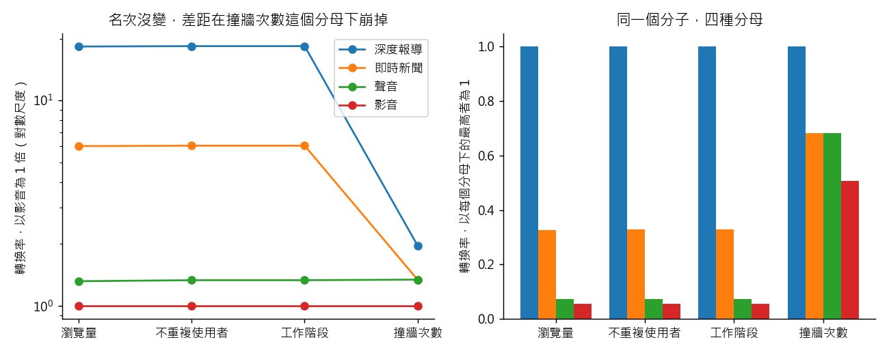

練習 04 - 深度報導值不值得做
在本單元中，會介紹第 4 題「總編輯問「深度報導到底值不值得做」，一週內給他一頁答案」從頭到尾實際跑一次的方法、跑出來的數字，以及畫出來的圖。
這一頁是做完之後對答案用的。還沒動手的話，先回 Hub - 資料分析練習案例庫 找到這一題，照「怎麼做」那一欄自己跑一次再回來。
題目
有人會這樣問你：編前會上總編輯說：「一則深度報導要三個記者做兩週，即時新聞一天出五十則。深度報導到底值不值得繼續做？」
| 難度 | 入門 |
| 組別 | 第 2 組：把經營問題拆成算得出來的東西 |
| 用哪張表 | content_monthly_flat（L1：content_monthly_2024_10.csv） |
| 對應單元 | 商業分析的四個問題 |
方法
先做「四個問題」的拆解：把這一句話改寫成描述（10 月四種內容各產出幾則、被看多少、帶進多少訂閱）、診斷（深度報導的轉換為什麼不一樣）、預測（多做 20 則會怎樣）、處方（人力要不要調），然後只回答手上資料真的答得出來的前兩個，其餘標成「這份資料答不了，要有什麼資料才答得了」。實作就是一句 groupby('content_type')，一次把則數、pv、uv、工作階段、撞牆次數、轉換數，以及四個不同分母下的轉換率全部算出來。用 Python，因為同一份彙總要換四個分母各算一次，pandas 改一行就重算完，用 Excel 樞紐分析表要重做四遍還容易對錯欄位。
程式
這一題用 Python，整支程式如下。資料放在 dist/L1 與 dist/L2 兩個資料夾。
from _kmg import *
r = R(4, "總編輯問「深度報導到底值不值得做」，一週內給他一頁答案")
f = dedupe(flat())
g = f.groupby("content_type").agg(n=("content_id", "count"), pv=("pv", "sum"), uv=("uv", "sum"),
s=("sessions", "sum"), hit=("paywall_hit_cnt", "sum"), conv=("conversion_cnt", "sum"))
T = g.sum()
r.chk("深度報導則數佔比", 0.149, float(g.loc["feature", "n"] / T["n"]), tol=0.002)
r.chk("深度報導瀏覽量佔比", 0.113, float(g.loc["feature", "pv"] / T["pv"]), tol=0.002)
r.chk("深度報導訂閱佔比", 0.329, float(g.loc["feature", "conv"] / T["conv"]), tol=0.002)
per = g["conv"] / g["n"]
for t, e in [("feature", 22.3), ("news", 10.4), ("podcast", 2.6), ("video", 1.2)]:
r.chk("每則平均訂閱 " + t, e, float(per[t]), tol=0.06)
hr = g["conv"] / g["hit"]
r.chk("撞牆後轉換率 feature", 0.2897, float(hr["feature"]), tol=0.0006)
r.chk("撞牆後轉換率 news", 0.1977, float(hr["news"]), tol=0.0006)
r.chk("撞牆後轉換率 podcast", 0.1976, float(hr["podcast"]), tol=0.0006)
r.chk("全站 轉換÷瀏覽量", 0.0157, float(T["conv"] / T["pv"]), tol=0.0006)
r.chk("全站 轉換÷工作階段", 0.0185, float(T["conv"] / T["s"]), tol=0.0006)
r.chk("全站 轉換÷撞牆次數", 0.219, float(T["conv"] / T["hit"]), tol=0.0006)
DEN = {"pv": "瀏覽量", "uv": "不重複使用者", "s": "工作階段", "hit": "撞牆次數"}
rate = pd.DataFrame({k: g["conv"] / g[k] for k in DEN})
ranks = {k: list(rate[k].sort_values(ascending=False).index) for k in DEN}
same_rank = len({tuple(v) for v in ranks.values()}) == 1
np_ratio = rate.loc["news"] / rate.loc["podcast"]
fv_ratio = rate.loc["feature"] / rate.loc["video"]
r.chk("四個分母下名次都一樣", True, same_rank)
r.chk("即時新聞對聲音 每次瀏覽（倍）", 4.5, float(np_ratio["pv"]), tol=0.1)
r.chk("即時新聞對聲音 撞牆後（倍）", 1.0, float(np_ratio["hit"]), tol=0.01)
r.chk("深度報導對影音 每次瀏覽（倍）", 18, float(fv_ratio["pv"]), tol=0.5)
r.chk("深度報導對影音 撞牆後（倍）", 2, float(fv_ratio["hit"]), tol=0.1)
r.pit(same_rank and np_ratio["pv"] / np_ratio["hit"] > 3,
"四個分母下名次都是 %s，只看名次會以為分母不重要；但即時新聞對聲音從 %.1f 倍變成 %.2f 倍" % (
"＞".join(ranks["pv"]), np_ratio["pv"], np_ratio["hit"]))
r.sc(float(np_ratio.max() / np_ratio.min()) > 3,
"倍數表：即時新聞對聲音 " + "、".join("%s %.2f 倍" % (DEN[k], v) for k, v in np_ratio.items())
+ "；深度報導對影音 " + "、".join("%s %.1f 倍" % (DEN[k], v) for k, v in fv_ratio.items()))
rel = rate / rate.loc["video"]
NAME = {"feature": "深度報導", "news": "即時新聞", "podcast": "聲音", "video": "影音"}
fig, ax = plt.subplots(1, 2, figsize=(10, 4))
x = np.arange(len(DEN))
for t in ["feature", "news", "podcast", "video"]:
ax[0].plot(x, rel.loc[t], marker="o", label=NAME[t])
ax[0].set_yscale("log")
ax[0].set_xticks(x, list(DEN.values()))
ax[0].set_ylabel("轉換率，以影音為 1 倍（對數尺度）")
ax[0].set_title("名次沒變，差距在撞牆次數這個分母下崩掉")
ax[0].legend()
w = 0.2
for i, t in enumerate(["feature", "news", "podcast", "video"]):
ax[1].bar(np.arange(4) + (i - 1.5) * w, [rate.loc[t, k] / rate[k].max() for k in DEN], w, label=NAME[t])
ax[1].set_xticks(np.arange(4), list(DEN.values()))
ax[1].set_ylabel("轉換率，以每個分母下的最高者為 1")
ax[1].set_title("同一個分子，四種分母")
save_fig(fig, "ex04_denominators.png")
r.save()
程式裡的 r.chk(項目, 預期值, 實算值) 是對照檢查，把入口頁寫的數字跟實際算出來的放在一起比；r.pit 記錄坑有沒有出現，r.sc 記錄自己驗那一步有沒有效。畫圖的部分在程式最後面。
程式開頭的 from _kmg import * 載入共用的讀檔、去重、換幣別與畫圖函式，內容在 練習 01 - 月會上的則數對不對 的「共用的讀檔函式」那一段。
結果
深度報導只佔 10 月 1,438 則內容的 14.9%、瀏覽量的 11.3%，卻拿下 32.9% 的新訂閱；每則平均帶進 22.3 個訂閱，即時新聞 10.4 個、聲音 2.6 個、影音 1.2 個。改用「撞到付費牆之後有沒有訂閱」當分母，深度報導 28.97%、即時新聞 19.77%，這個差距是這份資料裡最穩的一件事。同時你會親眼看到「值不值得」這句話本身沒有答案：資料裡沒有人力成本，所以最後一哩一定要自己補一個假設，並把它寫出來。
實際跑出來的數字
下表每一列都是程式實際算出來的值，18 項全部跟上面那段文字對得起來。
| 項目 | 實跑結果 |
|---|---|
| 深度報導則數佔比 | 0.1488 |
| 深度報導瀏覽量佔比 | 0.1126 |
| 深度報導訂閱佔比 | 0.3293 |
| 每則平均訂閱 feature | 22.257 |
| 每則平均訂閱 news | 10.3673 |
| 每則平均訂閱 podcast | 2.5975 |
| 每則平均訂閱 video | 1.1832 |
| 撞牆後轉換率 feature | 0.2897 |
| 撞牆後轉換率 news | 0.1977 |
| 撞牆後轉換率 podcast | 0.1976 |
| 全站 轉換÷瀏覽量 | 0.0157 |
| 全站 轉換÷工作階段 | 0.0185 |
| 全站 轉換÷撞牆次數 | 0.2195 |
| 四個分母下名次都一樣 | 是 |
| 即時新聞對聲音 每次瀏覽（倍） | 4.5436 |
| 即時新聞對聲音 撞牆後（倍） | 1.0004 |
| 深度報導對影音 每次瀏覽（倍） | 18.2945 |
| 深度報導對影音 撞牆後（倍） | 1.9679 |
圖表

左圖把四種內容的轉換率換算成影音的幾倍（對數尺度）：前三個分母下幾乎一樣，換成撞牆次數之後差距大幅縮小，但名次沒有換。右圖是同一件事的長條版，每個分母下的最高者算 1。
這題的坑，實際跑的時候有沒有出現
分母混淆。同一個分子（轉換數）除以瀏覽量是 1.57%、除以工作階段是 1.85%、除以撞牆次數是 21.9%，三個都是對的，講的卻是三件不同的事。最常見的錯是挑一個最好看的貼進報告，卻沒說那是誰除以誰。這份資料裡四種內容的名次在四個分母下都一樣，只看名次會以為分母不重要；真正變的是差距——即時新聞的每次瀏覽轉換率是聲音的 4.5 倍，換成撞牆後的轉換率兩者幾乎一樣（19.77% 對 19.76%）；深度報導對影音從 18 倍縮成 2 倍。
實際跑的結果：四個分母下名次都是 feature＞news＞podcast＞video，只看名次會以為分母不重要；但即時新聞對聲音從 4.5 倍變成 1.00 倍。
自己驗那一步抓不抓得到錯
把轉換數除以 pv、uv、sessions、paywall_hit_cnt 各算一次，四個數字並排寫下來，再用一句話說明你選的那個分母對應到哪一個經營決策。然後不要只看名次，把兩兩之間的倍數也在四個分母下各算一次：即時新聞對聲音從 4.5 倍變成 1.0 倍，代表「即時新聞比聲音會賣訂閱」只在拿瀏覽量當分母時成立，結論要改寫成帶著分母的句子，而不是換一個分母讓它繼續成立。
實際跑的結果：倍數表：即時新聞對聲音 瀏覽量 4.54 倍、不重複使用者 4.52 倍、工作階段 4.52 倍、撞牆次數 1.00 倍；深度報導對影音 瀏覽量 18.3 倍、不重複使用者 18.4 倍、工作階段 18.4 倍、撞牆次數 2.0 倍。
接著做
上一題 練習 03 - 最佳報導獎發給誰、下一題 練習 05 - 多三百個訂閱推哪一環，或回到 Hub - 資料分析練習案例庫 挑別的題目。
學生版｜更新於 2026-09-13 10:38